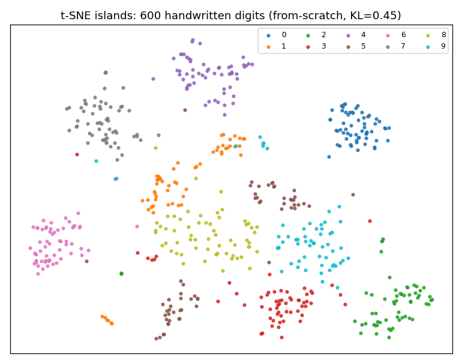
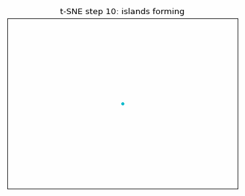
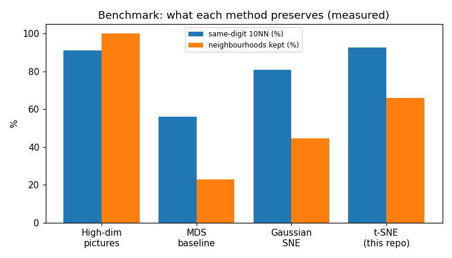
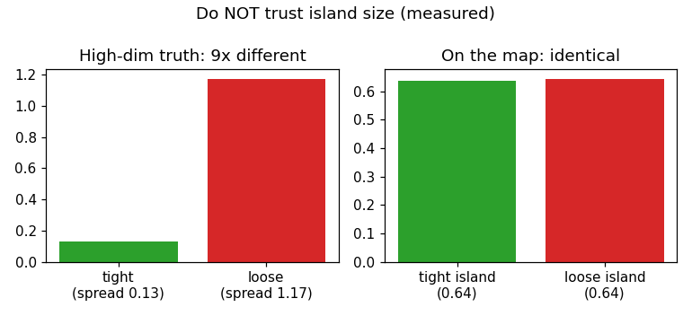

A from-scratch replication study: 600 handwritten digits → islands, every number re-measured, 34 automated checks green, plus a live-market replication. Read this page and you will know more about t-SNE than most interview candidates.

Above: the actual output of this repo's from-scratch code — 10 islands, zero label input. Below: the islands forming during optimization.

t-SNE sorts pictures it has never been told about because distances between similar pictures already encode the answer (91% of each picture's 10 nearest neighbours share its digit). It keeps near neighbours near (65.8% kept, 92.5% same-digit) using a heavy-tailed map kernel that solves the crowding problem (KL 0.45 vs 1.05 for Gaussian SNE).
Trust: which dots share an island. Do not trust: island sizes (a 9× spread gap maps to identical islands), gaps between islands (dice-driven: 5 seeds agree on only 4–6 of 10 nearest islands), any single map, or KL for picking perplexity. Verified on live market data too.

| Method | Same-digit 10NN | Neighbourhoods kept | Reading |
|---|---|---|---|
| Raw pictures (64-D) | 91.0% | 100% | Distances already know the digits |
| MDS baseline (keep all distances) | 56.1% | 22.9% | Colours mix — far pairs dominate |
| Gaussian SNE | 80.8% | 44.5% | Better, but groups touch (crowding) |
| t-SNE (this repo) | 92.5% | 65.8% | Islands + cleaner than input |
| p = 2 | p = 30 ✅ | p = 300 |
|---|---|---|
| 60.7% (shatters) | 65.8% | 48.4% (merges) |

A tiny 8×8 photo is 64 ink numbers (0 = paper, 1 = full ink). A dot on a page is just 2 numbers (across, up). The whole job: turn 64 numbers into 2 without losing what matters — pictures that look alike must land close together.
Compare square-by-square, square each difference (sign disappears, big gaps count more), add up, take the square root. Two similar threes: ≈1.2. A three vs a seven: ≈2.7. Zero would mean identical. Each picture's 10 nearest neighbours are 91% same-digit — the labels were never needed for sorting.
Three dots can all be mutually 1-apart (triangle). A fourth never fits on a flat page. With 600 pictures, far pairs outvote near pairs ~10:1, so the map optimizes the wrong thing: colours mix (56%), neighbours lost (77% gone). Measured, not opinion.
Each picture hands out 100% of "neighbour shares" over a bell curve: near pictures get a lot, far ones ~nothing. Perplexity ≈ how many effective neighbours each picture attends to (we use 30). Each picture gets its own bell width (measured 0.82–1.28) via 60 rounds of narrow/widen. Then: pull pairs the page underrates, push pairs it overrates, 300–1000 steps.
Hundreds of mid-distance pictures have no room on the page, so their tiny pulls drag
everything to the middle (groups touch). The fix: swap the page bell for
1/(1+d²) — 800× heavier tail at distance 3. Dots can sit far apart and still
keep a real share, so non-neighbours finally move away. Islands appear.
✅ Trust which dots share an island. ❌ Never trust island size (bandwidths erase it), gaps between islands (dice decide), a single map (vary seed + perplexity), or the KL score for choosing settings (it prefers worse maps — measured). You now know more than most interview candidates. Prove it below. 👇
| You are… | Use this repo to… | Start at |
|---|---|---|
| 🎓 Student / self-learner | Learn t-SNE by running real code, take the quiz, solve the A–B–C exercise | Beginner guide + quiz |
| 💼 Interview candidate | Answer "explain t-SNE pitfalls" with measured numbers, not buzzwords | Summary + benchmark table |
| 🔬 Researcher / PhD | Cite the tail diagnostic + KL finding; extend PAPER.md toward submission | PAPER.md + results.json |
| 📊 Data analyst | Stop misreading UMAP/t-SNE plots in reports; tune perplexity with the U-curve | Trust rules + size illusion |
| 📈 Finance quant | See the method work on live return windows; adapt market.py to your universe | market.py + dashboard |
| 👩🏫 Teacher | Teach dimensionality reduction with GIFs, figures and auto-graded quiz | preview.html on Pages |
PAPER.md) with two novel observationsgit clone <your-fork-url> && cd tsne-trust-study docker compose up # fast study → ./results/ docker compose --profile tests run tests # 34 checks
Without Docker: pip install -r requirements.txt && pytest -q && python scripts/run_all.py.
Full 1000-iteration scale: docker compose --profile full run full.
Settings → Pages → Deploy from branch → branch main, folder / (root) —
this preview.html becomes your live site (e.g.
https://<user>.github.io/tsne-trust-study/preview.html). No build step: it is a
single self-contained file (vanilla JS, inline styles, no external dependencies).